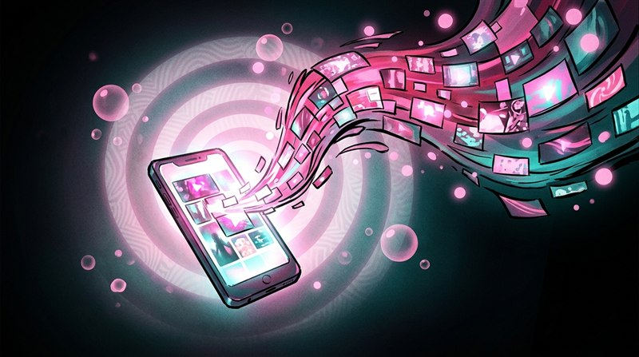

This streams adult content from the internet, via Scrolller - a public Reddit media browser. It comes from public communities and is not curated by CC Labs: anything those communities post can appear.
Your device fetches it directly. Nothing is uploaded anywhere, and nothing is saved into your library.
An endless feed of 20-40 second clips from your own videos and GIFs.
Add some to your assets folder to switch it on.
Only active videos and GIFs are used - curate in the Assets tab.

An endless feed cut from your own library - random 20-40 second slices of your videos and GIFs, a few on screen at a time. It watches what you linger on and quietly serves you more of that. Scroll or use the arrow keys to keep it moving; it never runs out.
Clips start with sound - press M to mute, Esc to close.